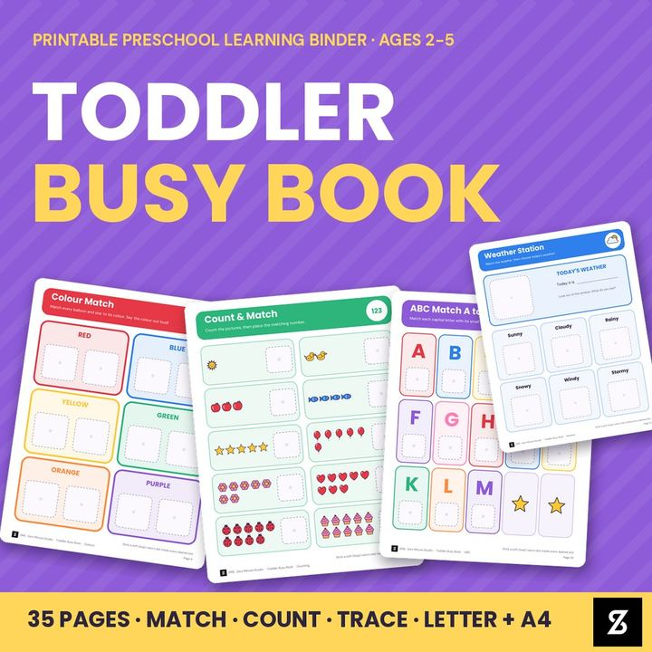
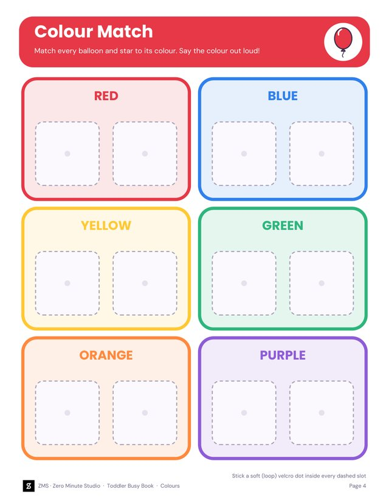
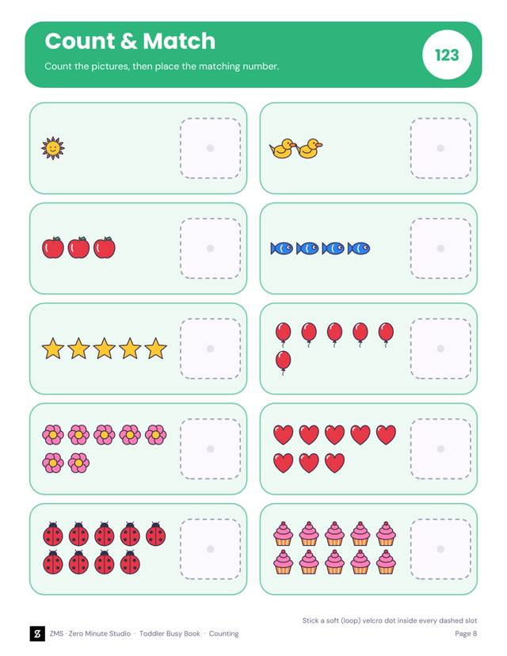
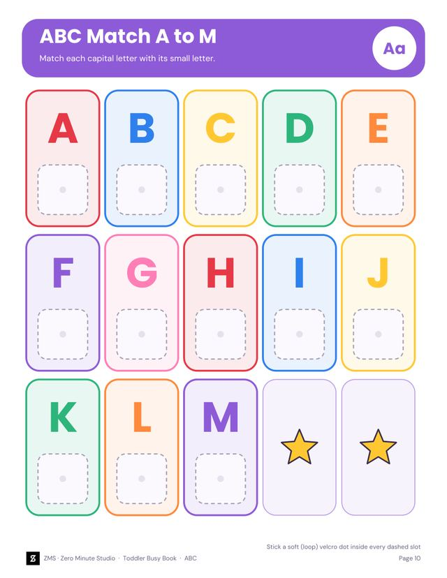
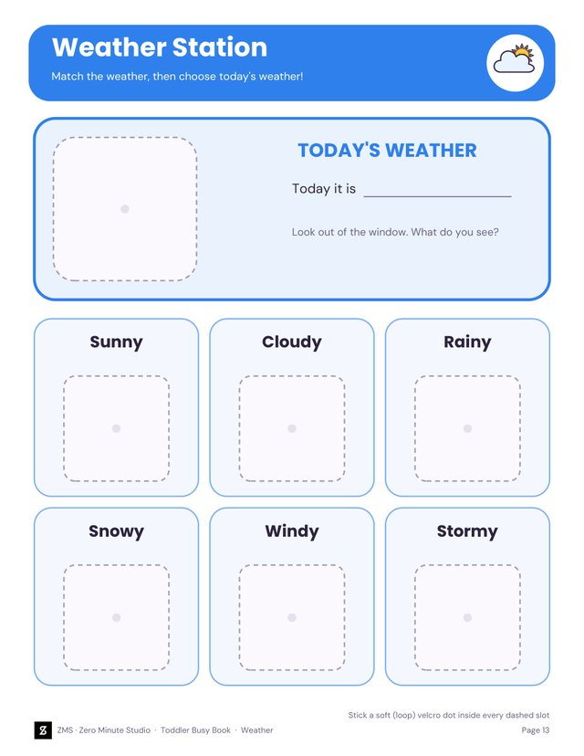
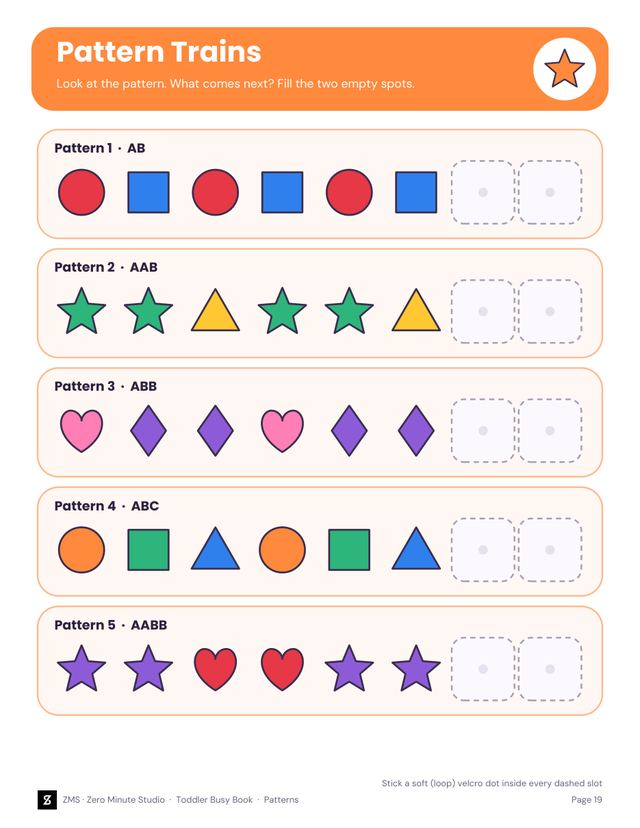
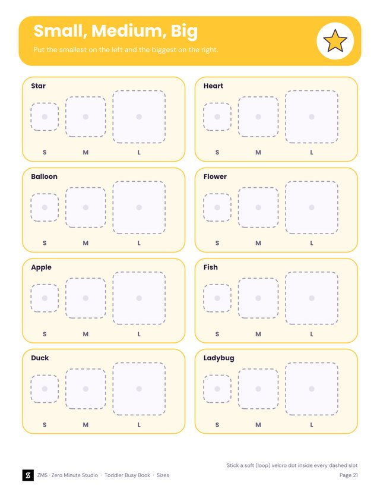
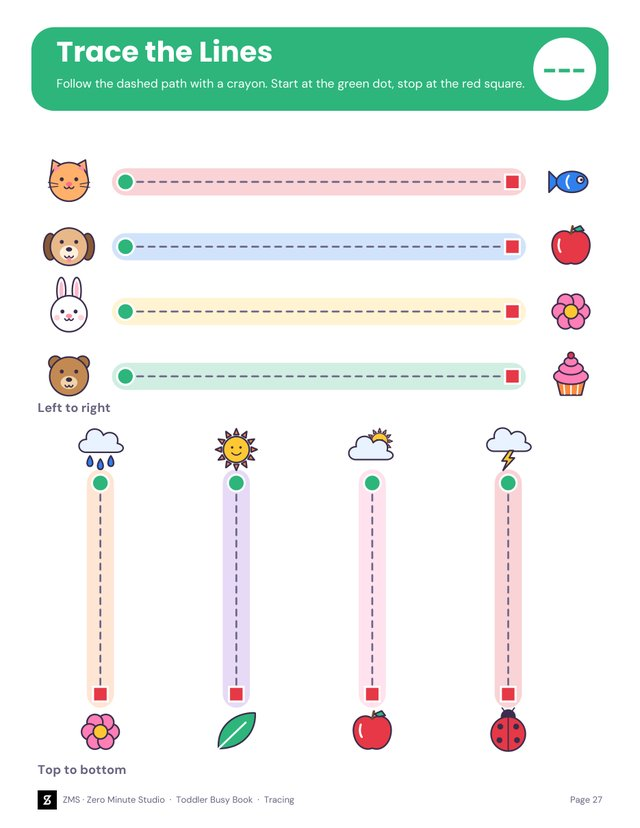
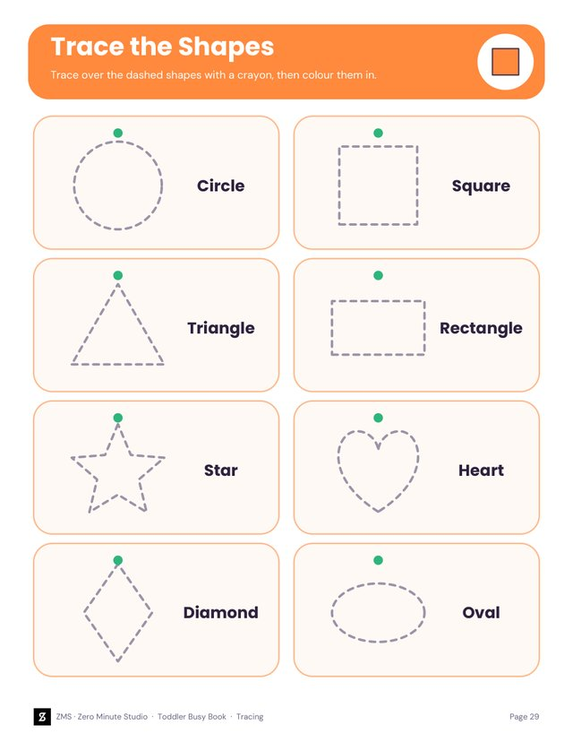

Minute
StudioBuy · ₹199
A busy book your little one will ask for again.
35 printable pages of matching, counting, ABC, weather, feelings, patterns and more, with cut-out pieces that stick on with velcro dots. Add tracing and cutting practice, and you have quiet-time fun for months.
Get the Busy Book · ₹199₹199 (about $2.40)
Instant download after payment. Pay with your email, no account needed.

What is in the file
11 matching activities
Colours, shapes, counting, ABC, weather, feelings, days, patterns, sizes, sorting and animals.
Cut-out pieces
Every board has its own cut-out pieces. Add velcro dots and little hands can stick, match and re-stick.
Tracing & cutting
5 pre-writing pages (lines, waves, zigzags, loops, shapes, numbers) and 2 scissor-skills pages.
Parent guide
Start Here and How to Play pages: printing, laminating, velcro, storage and play ideas.
Labels & certificate
12 pocket labels for zip pouches and a Busy Book Super Star certificate.
Letter + A4, fillable name
Both paper sizes in the download. Type your child's name on the cover and certificate.
A look inside
Real pages from the book. Each activity has a board with dashed slots and a sheet of cut-out pieces.



Learning through play
Weather, patterns and sizes build language and early maths, while tracing and cutting get small hands ready for writing.



Pre-writing and scissor skills
Great for
Quiet time, car and plane trips, waiting rooms, nursery and preschool classrooms, homeschool and playdates. Ten to fifteen minutes at a time is plenty.
Easy for parents
Print, cut, add velcro dots and slide the pages into a binder. The guide explains each step, and the second sets of pieces make pairs and memory games.


How it works
Pay
Check out on our SuperProfile store with your email. No account needed.
Download
You are taken to your download folder right after payment.
Print and play
Print at Actual size, cut, add velcro dots and play.
Questions
What ages is it for?
Ages 2 to 5. Toddlers start with colours, shapes and animals; older preschoolers enjoy counting, ABC matching, patterns and tracing.
What do I need?
A printer (or a print shop), scissors, self-adhesive velcro dots and a binder or sheet protectors. Card stock or a laminator makes the pages last longer, but plain paper works too.
What is inside the 35 pages?
A cover, a Start Here guide and a How to Play guide, then a board and cut-out pieces for 11 activities: Colours, Shapes, Counting 1 to 10, ABC (A to Z), Weather, Feelings, Days of the Week, Patterns, Sizes, Colour Sorting and Animals. Plus 5 tracing pages, 2 cutting-practice pages, 12 pocket labels and a certificate.
Can I type my child's name on it?
Yes. The cover and the certificate have fillable name boxes. They work in Adobe Acrobat, Chrome, Edge and Apple Preview, or you can just write the name by hand.
What paper sizes are included?
US Letter and A4, in two separate folders, plus a README.
Is it safe for toddlers?
The pieces and velcro dots are small, so always supervise play and keep them away from children under 3 who still put things in their mouths.
What do I get after paying?
You are taken straight to your download folder with both PDFs and the README.
How do I pay in USD?
Checkout is in INR (₹199, roughly $2.40). International cards are usually accepted; your bank converts the amount.
Print it once. Play for years.
Get the Busy Book · ₹199 (about $2.40)
Secure checkout on our SuperProfile store. For personal and classroom use.
We don't do refund & return ✌️